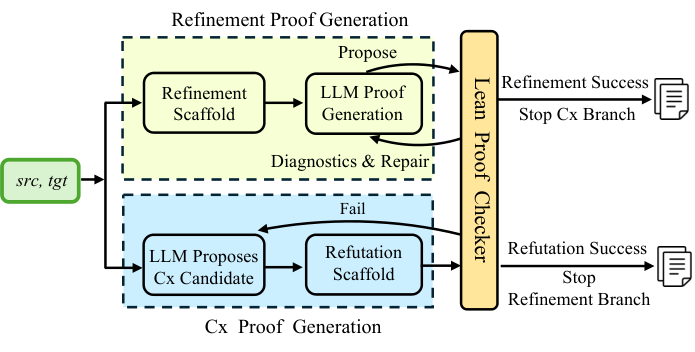
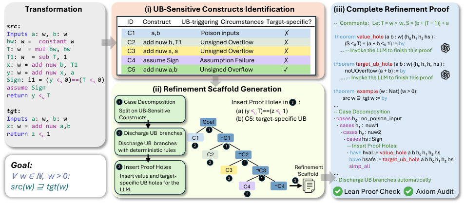

Trivet combines LLMs with Lean, generating scaffolded refinement or counterexample proofs for LLVM transformations that are checked by the Lean kernel.
Abstract
LLVM is the cornerstone of modern compilers, but its subtle intermediate representation (IR) semantics make transformations error-prone and necessitate formal verification. Alive2, a state-of-the-art translation validator based on satisfiability modulo theories, has achieved substantial success in automating the validation of LLVM transformations. However, it still faces scalability limitations, does not support symbolic bitwidths, and offers only bounded guarantees for loops. In contrast, interactive theorem provers such as Lean can address these cases but require substantial proof engineering. In this paper, we present Trivet, a framework combining large language models (LLMs) and Lean for automated translation validation of LLVM transformations. Trivet generates structured proof scaffolds based on source and target functions, automatically discharges obligations amenable to deterministic reasoning, and delegates transformationspecific obligations to LLMs. It produces refinement proofs or counterexample-based refutations, with every successful verdict checked by the Lean kernel. On 148 LLVM transformations, Trivet verifies or refutes 147, leaving one invalid case unresolved. Successful cases include 60 loop-free transformations with symbolic bitwidths, 27 cases from a restricted class of loop-containing transformations, and 10 complex valid fixed-bitwidth cases on which Alive2 times out. Compared with an unscaffolded baseline, scaffolding enables 26 additional proofs. On cases solved by both configurations, it reduces mean proof time by 75.9% and mean monetary cost by 88%.
Problem
LLVM IR transformations are error-prone and require formal verification. Alive2, the state-of-the-art SMT-based translation validator, times out on large formulas, lacks symbolic-bitwidth support, and gives only bounded loop guarantees. Interactive provers like Lean can handle such cases but require heavy proof engineering.
Approach
Trivet integrates an LLM with Lean to automate LLVM translation validation. For each transformation it runs a refinement branch and a counterexample branch in parallel. The refinement branch emits a structured scaffold that discharges deterministic obligations and leaves typed holes for the LLM to fill, while the counterexample branch has the LLM propose a candidate that a refutation scaffold turns into a proof of non-refinement. Every successful proof is checked by the Lean kernel, and Lean diagnostics guide LLM revisions.

Figure 1 . The workflow of Trivet . Cx denotes counterexample.

Figure 2 . An illustrative example of refinement proof generation in Trivet .
Results
On 148 real-world LLVM transformations, Trivet verified or refuted 147, leaving one invalid case unresolved, including 60 loop-free symbolic-bitwidth cases and 10 fixed-bitwidth cases where Alive2 times out. Scaffolding enabled 26 additional proofs and, on cases solved by both configurations, cut mean proof time by 75.9% and mean cost by 88%.